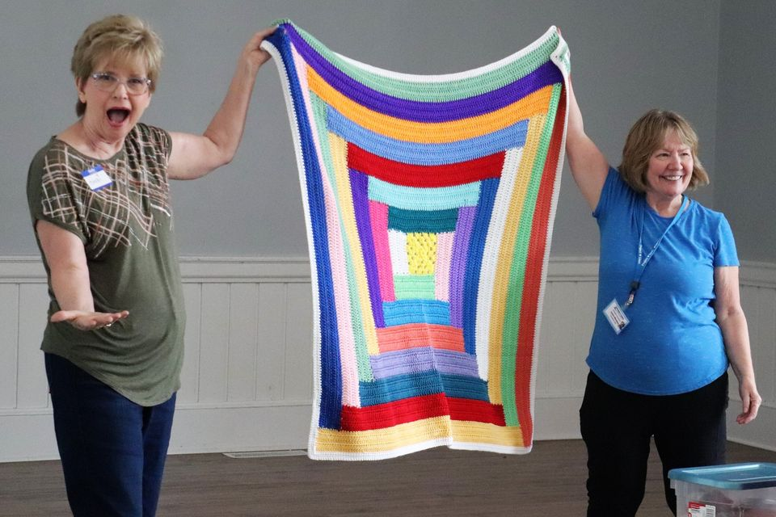

| Meetings | Dropoff Sites | Patterns & Tutorials |
|---|---|---|
| Meetings are usually on the 1st Wednesdays and 3rd Saturdays of each month. Check the News Page for the current schedule and locations. | Do you have beautiful blankets ready to be picked up by Project Linus? Find out where our drop points are. | If you’re new to blanket making or just want to learn some new techniques, we’ve got great “How To’s”. |
On Dec 24, 2026, Project Linus will celebrate 31 years of providing comfort and security to over 10 million children. Please help us to continue our mission.
It is that time of year! The holidays are approaching and we are reminded that there are thousands of children across the country who are going through difficult circumstances—children in need of comfort.
Project Linus provides handmade blankets as gifts to children who are ill, traumatized, or otherwise in need. They may be suffering from illness, a family crisis, homelessness, abuse, or have lost everything in a natural disaster. Economic hardship has hit so many families; we want to help those children. This is an ongoing process for us. We need your help to continue our mission. The number of children that need blankets continues to grow. Our costs continue to increase each year. Our Chapters are self-supported and are 100 percent volunteer. The Annapolis, MD Chapter has made and donated over 3,000 blankets to kids in Anne Arundel County in 2026. Help us continue to provide security and love to kids through handmade blankets.
To donate click the link below and select Local Chapter for your donation. In the donor scroll type Annapolis, MD Chapter/Elena Johnson Coordinator for our chapter to receive 100% of the funds.
https://linus-project.networkforgood.com/
Project Linus is a nationwide non-profit organization with a two-fold mission.
First: It is our mission to provide love, a sense of security, warmth and comfort to children who are seriously ill, traumatized, or otherwise in need through the gifts of new handmade blankets and afghans, lovingly created by volunteer “blanketeers.”
Second: It is our mission to provide a rewarding and fun service opportunity for interested individuals and groups in local chapters
Read more about Project Linus
All blankets that are received by Project Linus are inspected, labeled, and packaged for delivery to local agencies, and others, for the benefit of children in their care. Project Linus also provides blankets in response to local, regional and national disasters.